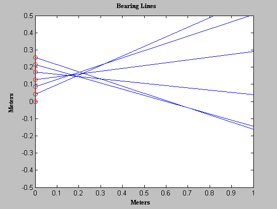
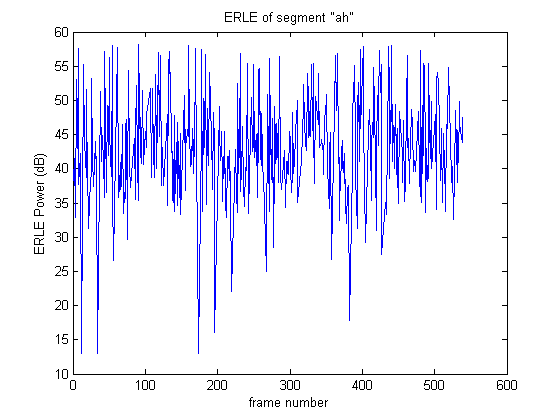

ResultsThe first image below was captured in a real-time environment. The speaker was placed in front of the array of seven microphones. The time delays were sent to matlab from the signal processor, and the bearing lines were then plotted. I also performed some echo cancellation experiments. The first is the president in the near room and background noise coming from the far room. The second is the same setup but with echo cancellation turned on. The number of taps was 1024 with a projection order of 16. The last experiment is with beamforming turned on. You should listen to all three at the same volume. The second image is a plot of Echo Return Loss Enhancement (ERLE) for the speech segment "ah". ERLE is a measure of echo cancellation. | ||
|   | ||